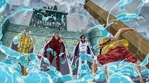
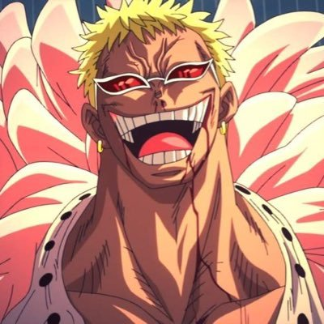
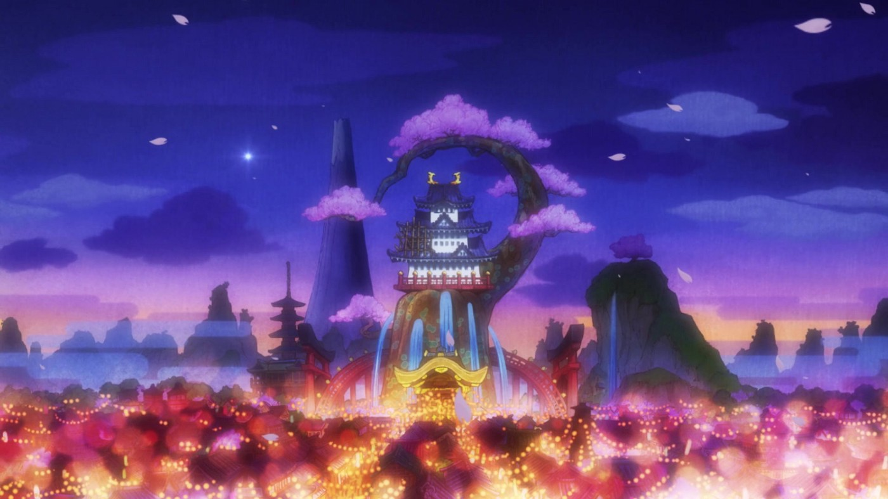
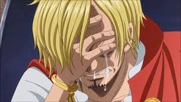
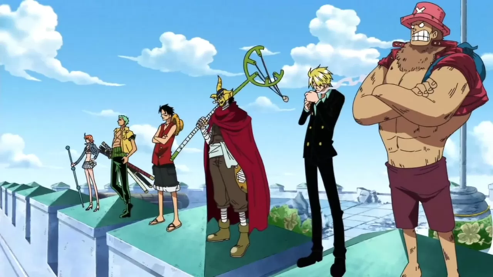

Marine Ford
Uma guerra gigantesca com o fim de resgatar o ace, envolvendo toda a marinha, shichibukais, todo o bando do yonkou Barba Branca com novos personagens incríveis revelados. Poder despertado pelo luffy e diversas outras coisas!
Dressrossa
Um arco que particulamente eu adoro, em grande parte pelo Doffy ser o melhor que eu já vi em todos os animes, séries ou filmes. Foi a primeira "missão" da aliança do Law com o Luffy, que tinha como objetivo principal derrubar um Yonkou, fato que veio ocorrer no país de Wano
Wano
O recente arco que no mangá chegou ao seu fim juntamente da aliança de Luffy e Law que durou 10 anos no mangá, deixando um hype gigantesco para o próximo arco, visto que será a primeira aventura dos mugiwaras sem alianças em muito tempo. Briga contra 2 yonkous, flashbacks do Oden que envolveu toda sua aventura com Roger e Barba Branca, a briga e a amizade entre os 2 bandos, dando uma fração do poder de personagens que não sabemos o quão rídiculos de forte eles são, como o Rayleigh, que parou um chute do Marco com UM DEDO. Novos personagens apresentados e incríveis como os Akazaya, Yamato, O-Tama, entre outros. Fora todos os poderes dispertos em basicamente todos os mugiwaras
Whole Cake
O arco que mais desenvolveu algum personagem até hoje. Sabiamos tão pouco sobre Sanji até esse arco, ele mostrou todo o passado triste do Sanji e como a tripulação lidou com isso
Enies Lobby
Um arco incrível, grande parte da aventura dos mugiwaras tem seu ápice nesse arco, onde é declarada explicitamente a guerra contra o Governo Mundial, resgate da Robin e novos poderes para toda tripulação